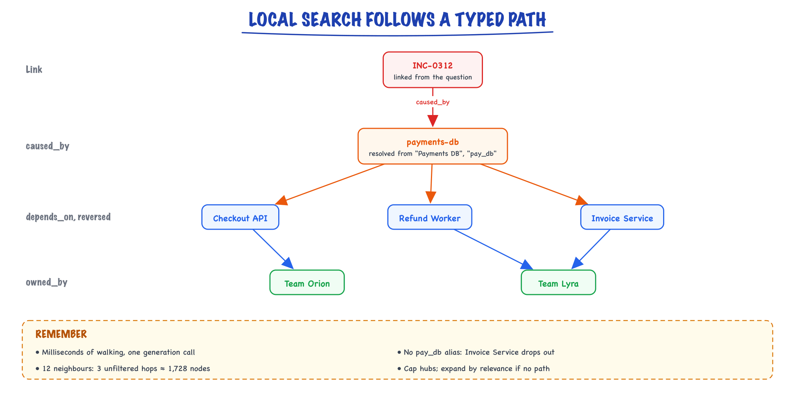
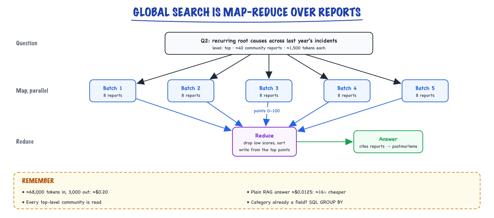

Agentic RAG & GraphRAG // Knowledge & RAG
Retrieval as a tool the agent drives, and knowledge graphs for multi-hop questions.
01 — At a glance
Beyond vector chunk retrieval: knowledge graphs with community summaries (Microsoft GraphRAG), plus agent loops that plan multi-hop retrieval, rewrite queries, and synthesize answers across structured + unstructured sources.

Dual index: vector chunks for local facts + knowledge graph (entities, relations, community reports) for global themes. Agent orchestrator chooses retrieval mode, iterates tool calls, and synthesizes grounded answers with citations.

Graph zoom: Leiden clustering at multiple levels → community reports stored as retrieval units. Global query runs parallel LLM map over top-K reports, then reduce into final answer. Index cost dominated by extraction + report generation LLM calls.

Agent zoom: plan node → tool node (vector/graph/SQL) → grader node → loop or generate. Typical 3–6 LLM calls per user question; budget explicitly in product SLA.
02 — New words
| Word | Meaning |
|---|---|
| Multi-hop question | A question whose answer needs two or more facts from different places, where finding the second depends on the first. |
| Global question | A question about the whole corpus ("what are the recurring causes?") whose answer is an aggregate, not any single passage. |
| Agentic RAG | Retrieval exposed as a tool that a model calls in a loop: search, read, decide what is missing, search again, then answer. |
| Knowledge graph | Data stored as nodes (entities such as services, people, incidents) joined by typed edges (relations such as depends_on). |
| Triple | One edge written as (subject, relation, object), for example (Checkout API, depends_on, payments-db). |
| Entity resolution | Deciding that different strings ("Payments DB", "pay_db") name the same thing, and merging them into one node. |
| Fan-out | How many nodes a traversal reaches: roughly the average degree raised to the number of hops. |
| Community | A group of nodes more densely connected to each other than to the rest of the graph, found by an algorithm such as Louvain or Leiden. |
| Community report | An LLM-written summary of one community's entities and relations, generated at indexing time and retrieved later. |
| Local search | Graph retrieval that starts from entities named in the question and walks their neighbourhood. |
| Global search | Graph retrieval that answers from community reports with a map-reduce over many of them. |
| Provenance | The record of which source chunk produced each node and edge, so answers can cite it and deletes can remove it. |
| RAG | Retrieve real data → put in prompt → generate grounded answer. |
The lesson
03 — The question
Standard RAG makes one assumption: the answer lives in a few passages that look like the question. Embed the question, take the five most similar chunks, generate. That works for lookups ("what is the on-call escalation policy?") and fails on two other shapes of question. A multi-hop question needs a chain of facts where the later links do not resemble the question at all. A global question asks about patterns across hundreds of documents, and no five chunks contain a pattern. Agentic RAG attacks the first by letting a model retrieve repeatedly; GraphRAG attacks both by building a structured index of entities and relations before any question arrives.
The interview questions:
- Why does top-k vector retrieval fail on multi-hop and global questions?
- How does an agentic retrieval loop work, and what does it cost?
- How does GraphRAG build its index, and how do local and global search use it?
- When is all of this worth it compared with plain RAG?
The running example: an engineering organisation's knowledge base of 5,000 documents, split into 40,000 chunks: service descriptions, team pages, runbooks and 300 incident postmortems from the past year. Two questions from the engineering director:
- Q1 (multi-hop): "Which teams owned services affected by incident INC-0312?"
- Q2 (global): "What are the recurring root causes across last year's incidents?"
04 — Step 1: why one similarity search is not enough
Trace Q1 through the evidence a human would use. The postmortem for INC-0312 says the cause was the payments database. Three service pages say Checkout API, Refund Worker and Invoice Service depend on that database. Two team pages say who owns those services. The answer needs evidence from all six pages.
Embed the question and search. The postmortem chunk scores well, because it mentions INC-0312. The service pages do not mention the incident; they mention "payments-db", a word absent from the question. The team pages mention neither. Similarity search ranks chunks by resemblance to the question, and the hop-two and hop-three evidence does not resemble it. No choice of embedding model fixes this, because the needed chunks are only relevant given the first answer, which the search does not know.
Q2 fails for a different reason. Its answer is a count over 300 postmortems. With \(k = 5\), retrieval shows the model \(5/300 \approx 1.7\%\) of them, picked by similarity to the phrase "recurring root causes", which favours postmortems that happen to use those words. The model will confidently summarise those five as if they were the whole year. Raising \(k\) to 300 would overflow the context and cost a fortune per question.
So there are two distinct fixes to learn: retrieve more than once, using what you learned (agentic RAG), and pre-compute structure so that relations and aggregates are already there at query time (GraphRAG).
05 — Step 2: agentic RAG, retrieval as a tool in a loop
Give the model a search(query) tool and the loop from the agent loop. For Q1 it runs like this:
- Search "INC-0312 root cause". Read: caused by payments-db.
- Search "services that depend on payments-db". Read: Checkout API, Refund Worker, Invoice Service.
- Search "owner of Checkout API, Refund Worker, Invoice Service". Read: Team Orion, Team Lyra.
- Decide the evidence is sufficient; answer with citations to all six pages.
Each step's query is written using the previous step's result. That is the whole trick: the model performs the reformulation that a single search cannot.
It has two costs. Latency and money: each hop is one LLM call (to read and decide) plus one search. At an illustrative 1.2 seconds per call and 0.1 seconds per search, three hops plus the final answer take about 5 seconds before streaming starts, against about 1 second for plain RAG. Compounding error: if each hop finds the right evidence with probability 0.9, three hops in sequence succeed with \(0.9^3 = 0.73\). A wrong first hop ("caused by the search index") sends every later hop in the wrong direction, and the answer will be confidently wrong with plausible citations.
Variants differ in how the model decides what to do next. Some grade each retrieved batch ("relevant / irrelevant / ambiguous") and re-search or fall back to web search when the grade is poor; others let the model emit a special "retrieve" decision mid-generation. They share the same engineering needs:
- A step budget (for example 5 searches) and a time budget, after which the agent answers with what it has or says what it could not find.
- A router in front, so single-hop questions, which are most of them, go straight to plain RAG and never pay for the loop.
- Tool results trimmed before re-entering context, or the context fills with every chunk from every hop.
Agentic RAG needs no new index, so it is the first thing to try for multi-hop questions. It does nothing for Q2: no sequence of five-chunk searches reads 300 postmortems.
06 — Step 3: turning text into a graph
GraphRAG moves the work to indexing time. For every chunk, an LLM is asked to list the entities it mentions and the relations between them, as structured output (see structured output):
{"entities": [
{"name": "Checkout API", "type": "service", "description": "Public API that places orders"},
{"name": "payments-db", "type": "database", "description": "Primary Postgres for payments"}],
"relations": [
{"source": "Checkout API", "relation": "depends_on", "target": "payments-db",
"description": "Writes every order's payment row synchronously"}]}
Each relation is a triple plus a short description, and each is stored with its source chunk id (provenance). The union over all chunks is the knowledge graph: for our corpus, a few thousand entities and tens of thousands of edges.
Two choices shape the result. A fixed schema (entity types: service, team, incident, database; relations: depends_on, owned_by, caused_by) makes extraction consistent and traversal predictable; open extraction ("any entity, any relation") captures more but produces a long tail of one-off relation names like "is sometimes slowed by" that no query will ever follow. For a domain you know, define the schema. And extraction is an LLM call per chunk, so it is the dominant indexing cost (Step 8 has the numbers).
Extraction also makes mistakes: missed relations, invented ones, an entity typed wrongly. Every downstream answer inherits them. Audit a random sample of a few hundred triples against their source chunks before trusting the graph; that sample gives you precision and recall for extraction, the graph's equivalent of the retrieval metrics in making RAG good.
07 — Step 4: entity resolution, or the graph falls apart
Our corpus writes the payments database as "payments-db", "Payments DB" and "pay_db". Naive extraction creates three nodes. Suppose the true node has 30 edges, split 15, 10 and 5 among the three spellings. A traversal that starts from "Payments DB" sees 15 of 30 edges: half the dependent services vanish from Q1's answer, silently. Splits concentrate on the most important entities, because important things are mentioned most often and in the most ways.
Resolution happens in layers, cheapest first:
- Normalise strings: lower-case, collapse hyphens, underscores and spaces. "payments-db" and "Payments DB" become "payments db".
- Alias tables from systems of record: a service catalogue, the HR directory, a CMDB. "pay db" maps to "payments db" because the catalogue says so. This is the most reliable layer and the one most teams skip.
- Similarity matching: embed entity names plus descriptions and propose merges above a threshold, with an LLM or a human confirming ambiguous ones. Watch the opposite error: "Apple" the vendor and "apple" the internal codename must not merge, which is why the entity type and description are part of the comparison.
Give each resolved entity a stable id, and link chunks to entity ids in their metadata. That link is useful even without the rest of GraphRAG: it lets ordinary vector search filter by entity.
08 — Step 5: local search, walking the neighbourhood
Local search answers questions about named things. It runs in four moves:
- Link entities in the question to graph nodes: "INC-0312" matches node
inc 0312(by name, or by embedding the question against entity descriptions). - Expand along edges to collect a subgraph.
- Gather the text: entity descriptions, relation descriptions, and the source chunks attached by provenance.
- Rank and pack that text into the prompt within a token budget, then generate with citations.
The danger is in step 2. If the average node has 12 neighbours, expanding 1 hop reaches about 12 nodes, 2 hops about \(12^2 = 144\), 3 hops about \(12^3 = 1{,}728\). Hub nodes make it worse: everything depends on the shared database and the logging service, so a naive 3-hop walk returns half the company. Expansion must be constrained:
- Follow typed paths. Q1 needs exactly caused_by → (reverse) depends_on → owned_by. A planner, which can be the LLM itself, turns the question into a path over the schema; the walk follows only those edge types. On our example graph this returns Team Lyra and Team Orion and the seven chunks that justify them, and nothing else.
- Cap by relevance. When the path is not known, score neighbours by similarity of their description to the question and keep the top few per hop.
- Cap hubs. Do not expand through nodes above a degree limit unless the question names them.

For "which teams owned services affected by INC-0312?" the walk follows only caused_by, then depends_on in reverse, then owned_by, and returns Team Orion and Team Lyra with the seven chunks that justify them.
Compare the agentic loop from Step 2. Both answer Q1. The agent rediscovered the path with three LLM calls and three searches at query time; the graph had the relations pre-extracted, so the walk costs milliseconds and one generation call. The graph pays for that at indexing time, and it can only follow relations the extractor found.
09 — Step 6: communities, the structure behind global questions
For Q2 we need groups. The postmortems, services, databases and causes form clusters: incidents involving the payments database and its dependants are heavily linked to each other and lightly linked to incidents about the search index. Community detection finds such clusters automatically.
Louvain and its refinement Leiden optimise modularity: the fraction of edges that fall inside communities minus the fraction you would expect if edges were placed at random with the same node degrees. A partition with high modularity has many more internal edges than chance. The algorithms start with every node alone, repeatedly move nodes to the neighbouring community that raises modularity most, then merge each community into a single node and repeat. Repeating gives a hierarchy: at the top, a handful of large communities ("payments platform", "search", "identity"); lower down, finer ones ("payments-db connection exhaustion incidents").
Then the expensive, distinctive step: for every community at every level, an LLM writes a community report from its entities, relations and a sample of source text: a title, a summary, the key findings, and an importance rating. For our corpus there might be about 40 communities at the top level and a few hundred in total. These reports are a new kind of retrievable unit: pre-computed summaries of parts of the corpus, written before anyone asked.
A practical warning: community detection is sensitive to graph quality. Unresolved duplicates and hub nodes distort it, so Steps 3 and 4 decide whether the communities mean anything.
10 — Step 7: global search, map-reduce over reports
Global search answers Q2 from the reports, not from chunks:
- Choose a level. Top-level reports for "across the whole year" questions; finer levels for narrower ones.
- Map. Split the reports into batches that fit a context window. For each batch, in parallel, ask the model: "From these reports, list points relevant to the question, each with an importance score from 0 to 100." With 40 reports of about 1,500 tokens, five batches of 8 reports is five parallel calls.
- Reduce. Gather all points, drop low scores, sort, and ask the model to write the final answer from the top points, citing the reports (which cite their sources).

For a corpus-wide question, the 40 top-level community reports are split into five batches that are mapped in parallel to scored points; the reduce keeps the best points and writes one answer that cites the reports.
Every postmortem contributed to some community, and every top-level community was read during the map, so the answer is built from the whole corpus rather than five similar chunks. That is what makes a corpus-wide answer possible.
It is not cheap per query. Map input is about \(40 \times 1{,}500 + 5 \times 1{,}000 = 65{,}000\) tokens (reports plus instructions). Each map call writes about 400 tokens of scored points, and the reduce reads those 2,000 plus instructions (about 3,000 tokens in) and writes about 1,000. That is about 68,000 tokens in and 3,000 out. At illustrative prices of $2.50 per million input tokens and $10 per million output tokens, one global question costs about \(0.17 + 0.03 = \$0.20\), against about $0.0125 for a plain RAG answer with 4,000 tokens in and 250 out: roughly 16 times more. Latency is one parallel map round plus a reduce, several seconds. Global search suits analysts asking a few questions a day, not a chatbot answering thousands.
Simpler alternatives exist for some global questions. If postmortems already carry a structured "root cause category" field, Q2 is a SQL GROUP BY, exact and free; route it there (see hybrid LLM patterns). GraphRAG's global search earns its cost when the categories are not known in advance and must be discovered from text.
11 — Step 8: what the index costs, and keeping it fresh
Indexing cost for our 40,000 chunks, with an extraction prompt of about 600 tokens of instructions plus a 500-token chunk, and about 300 tokens of output:
| Index step | Tokens | Illustrative cost |
|---|---|---|
| Embedding all chunks (plain RAG) | 20M in | about $0.40 |
| Extraction with a small model | 44M in, 12M out | about $14 |
| Extraction with a large model | 44M in, 12M out | about $230 |
| Community reports (~400 × 8,000 in, 800 out) | 3.2M in, 0.3M out | about $11 (large model) |
The prices are illustrative (per million tokens: embedding $0.02; small model $0.15 in and $0.60 out; large model $2.50 in and $10 out); the ratios are the point. Graph indexing costs one to three orders of magnitude more than embedding, because it runs a generative model over every chunk, and output tokens are the expensive kind. Teams usually extract with a small model and spot-check quality, and run several extraction passes ("gleaning") only where recall matters.
Freshness is harder than in plain RAG. A new postmortem means: extract its triples, resolve its entities against existing ones, add edges, and then the communities it touches may have changed, so their reports are stale. Practical systems re-extract changed chunks immediately, mark affected communities dirty, and regenerate their reports in a nightly batch, with a full re-clustering occasionally. Deletes rely on provenance: remove every edge whose only source chunk was deleted, then nodes with no edges, then mark their communities dirty. Without provenance you cannot delete correctly, and a removed document lives on inside a summary.
12 — Choosing an approach
| Question shape | First choice | Why |
|---|---|---|
| Lookup in one place | Plain RAG with hybrid search and reranking | Cheapest and fastest; most questions are this |
| Occasional multi-hop | Agentic RAG behind a router | No new index; pays only on the questions that need it |
| Frequent multi-hop over a stable domain with clear entities | Graph local search (or entity ids on chunks plus filters) | Relations pre-extracted; fast, consistent traversals |
| Themes across a large corpus, categories unknown | Graph global search | Only approach that reads the whole corpus per question |
| Aggregates over fields that already exist | SQL or an API tool | Exact, cheap, and auditable |
| Fast-changing content (news, chats) | Not GraphRAG | Re-extraction and report regeneration cannot keep up |
Whatever you choose, build a small golden set per shape first: 30 multi-hop questions with their evidence chains and 15 global questions with reference answers written by someone who knows the corpus. Measure plain RAG on it. The gap is the case for the extra machinery. Global answers have no single right answer, so judge them pairwise: show a judge two answers and ask which is more complete, more diverse in the causes it covers, and better supported. Then sample the claims and check they trace to real postmortems.
13 — In code: a graph from triples, a typed walk, and communities
import re import networkx as nx # (subject, relation, object, source_chunk) as an extractor would return them triples = [ ("INC-0312", "caused_by", "Payments DB", "pm-0312#2"), ("payments-db", "runs_on", "pg-cluster-7", "svc-pay#1"), ("Checkout API", "depends_on", "payments-db", "svc-checkout#3"), ("Refund Worker", "depends_on", "Payments DB", "svc-refund#1"), ("Invoice Service", "depends_on", "pay_db", "svc-invoice#2"), ("Checkout API", "owned_by", "Team Orion", "team-orion#1"), ("Refund Worker", "owned_by", "Team Lyra", "team-lyra#4"), ("Invoice Service", "owned_by", "Team Lyra", "team-lyra#5"), ("Search API", "depends_on", "search-index", "svc-search#1"), ("Search API", "owned_by", "Team Vega", "team-vega#2"), ("INC-0405", "caused_by", "search-index", "pm-0405#1"), ] def build(aliases): def canon(name): key = re.sub(r"[-_\s]+", " ", name.strip().lower()) # layer 1: normalise return aliases.get(key, key) # layer 2: alias table G = nx.MultiDiGraph() for s, r, o, src in triples: G.add_edge(canon(s), canon(o), rel=r, source=src) # keep provenance return G def walk(G, start, path): """Follow only the typed edges the question needs; collect source chunks.""" frontier, evidence = {start}, set() for rel, direction in path: nxt = set() for n in frontier: edges = G.in_edges(n, data=True) if direction == "in" else G.out_edges(n, data=True) for u, v, d in edges: if d["rel"] == rel: nxt.add(u if direction == "in" else v) evidence.add(d["source"]) frontier = nxt return sorted(frontier), sorted(evidence) q1_path = [("caused_by", "out"), ("depends_on", "in"), ("owned_by", "out")] for aliases in ({}, {"pay db": "payments db"}): G = build(aliases) teams, chunks = walk(G, "inc 0312", q1_path) print(f"aliases={bool(aliases)}: nodes={G.number_of_nodes()} teams={teams} evidence={len(chunks)} chunks") comms = nx.community.louvain_communities(G.to_undirected(), seed=7) for c in sorted(comms, key=len, reverse=True): print("community:", sorted(c))
Without the alias table, "pay_db" stays a separate node and Invoice Service drops out of the walk (evidence falls from seven chunks to five); Team Lyra survives only because it also owns Refund Worker, which is exactly how such bugs hide. With the alias, the walk returns Team Lyra and Team Orion with seven evidence chunks, and Louvain separates the payments cluster from the search cluster. In a real system the triples come from an LLM extraction pass, the path from a planner prompt, and each community would get an LLM-written report; Microsoft's open-source graphrag package and graph databases such as Neo4j implement those parts at scale.
Quick reference
14 — What & Why
Problem: Vanilla RAG fails on global questions (“What are the main themes across 10K docs?”) and multi-hop reasoning (“Which vendor contracts affect Project X’s budget?”). GraphRAG builds a graph index; agentic RAG adds planning loops.
Functional
- Extract entities/relations from corpus at ingest
- Cluster graph into communities with LLM-generated summaries
- Route queries to local (entity-centric) vs global (community) search
- Agent decomposes complex questions into sub-queries and tool calls
Non-Functional
- Ingest cost: GraphRAG indexing is LLM-heavy (10–100× vanilla RAG)
- Latency: agent loops add seconds; cap iterations
- Freshness: graph rebuild on doc change is expensive — incremental updates hard
Interview anchor: GraphRAG = better index structure; Agentic RAG = better query-time strategy. Production systems combine both.
15 — Core Concepts
| Term | Definition | Gotcha |
|---|---|---|
| Entity extraction | LLM/NER pulls nodes (people, orgs, concepts) from text | Hallucinated entities pollute graph |
| Relation triple | (subject, predicate, object) edge in KG | Needs dedup and canonical IDs |
| Community detection | Graph clustering (Leiden) into topic groups | Level of granularity affects global answers |
| Community report | LLM summary of each cluster for global retrieval | Generated offline at index time |
| Local search | Start from seed entities + neighboring chunks | Good for specific fact lookup |
| Global search | Map-reduce over community reports | Good for corpus-wide themes |
| Agentic RAG | LLM plans retrieval steps (tools: search, SQL, graph traverse) | Runaway loops without max steps |
| Self-RAG / CRAG | Model critiques retrieval quality, re-queries | Extra LLM calls per turn |
16 — API / Interface Surface
# Microsoft GraphRAG CLI (conceptual workflow) pip install graphrag # project.yaml: models, chunk size, community levels graphrag index --root ./rag_project # expensive offline pipeline graphrag query --root ./rag_project \ --method global \ --query "What are the top risk themes in our contracts?" graphrag query --method local \ --query "What obligations does Acme Corp have in Q3?"
# Agentic RAG with LangGraph tools (pattern)
from langgraph.prebuilt import create_react_agent
tools = [vector_search, graph_local_search, graph_global_search, sql_query]
agent = create_react_agent(model, tools)
result = agent.invoke({"messages": [("user", complex_question)]})
See LangGraph for agent graph patterns and The RAG pipeline for baseline retrieval API design.
17 — When to Use / When NOT
| Query type | Approach | Why |
|---|---|---|
| FAQ over 500 pages | Vanilla vector RAG | Cheaper; sufficient for local facts |
| “Summarize themes across entire corpus” | GraphRAG global | Community reports pre-aggregate |
| Multi-doc entity reasoning | Graph local + agent | Traverse relations across chunks |
| Real-time news | Not GraphRAG | Index rebuild too slow; use streaming RAG |
| Structured SQL primary | Text-to-SQL agent | Graph optional for join paths |
18 — Architecture
INGEST (offline, $$$)
Docs ──► Chunk ──► Embed ──► Vector DB
│
└──► Entity/relation extract ──► Knowledge Graph
│
└──► Community detect ──► LLM community reports
QUERY (online)
User Q ──► Query classifier (local / global / hybrid)
│
┌────────┴────────┐
▼ ▼
Local: entity seed Global: rank community reports
+ vector chunks + map-reduce synthesis
│ │
└────────┬────────┘
▼
Agent loop (optional): plan → retrieve → critique → answer
▼
Grounded response + citations
19 — Deep Dive: GraphRAG Pipeline
- Chunk documents (same as vanilla RAG)
- Extract entities and relationships with LLM prompts
- Build graph — nodes=entities, edges=relations, link to source chunks
- Detect communities (hierarchical Leiden algorithm)
- Generate community reports — LLM summarizes each cluster
- Query: local = entity-centric subgraph + chunks; global = map-reduce reports
20 — Deep Dive: Agentic RAG
Agent decides which retrieval tool to call and whether context is sufficient (ReAct, Self-RAG, CRAG patterns).
# Self-RAG style decision (conceptual) steps = [ "1. Decompose question into sub-queries", "2. vector_search(sub_q) OR graph_local(entity)", "3. Grade relevance: sufficient / insufficient / ambiguous", "4. If insufficient: rewrite query, try global search", "5. Synthesize with citations; abstain if still insufficient", ]
Implement with LangGraph conditional edges and max recursion_limit.
21 — Deep Dive: Hybrid with Vector RAG
- Keep vector index for lexical/semantic fallback
- Graph for entity disambiguation (“Apple” company vs fruit)
- RRF merge graph-derived chunks with dense hits — see The RAG pipeline
- Store
entity_idin chunk metadata for filtered search
22 — Deep Dive: Global vs Local Queries
| Mode | Example query | Retrieval unit |
|---|---|---|
| Local | “What did Jane say about budget?” | Entity Jane + neighbor chunks |
| Global | “Top 5 themes in research papers” | Community reports map-reduce |
| Hybrid | “How does theme X relate to entity Y?” | Global theme + local entity subgraph |
In production
23 — Production & Ops
Cost
- GraphRAG index: budget $LLM calls × chunks × extraction passes
- Agentic query: cap at 5 tool calls; use smaller model for grading
- Incremental: re-index only changed docs + graph patch (complex)
Quality
- Human eval on global questions (vanilla RAG baselines often fail here)
- Entity linking accuracy metrics
- Faithfulness checks on synthesized community reports
25 — Where people get lost
- GraphRAG for everything: 10× index cost unjustified for simple FAQ
- Hallucinated graph edges: poison multi-hop reasoning — human audit sample
- Unbounded agent loops: cost explosion; always set max iterations
- Stale community reports: doc deleted but report remains
- Skipping vanilla RAG baseline: compare before adding graph complexity
- "GraphRAG is better RAG." It is a different index for two question shapes. For lookups it costs far more to build and is no more accurate than plain RAG with hybrid search and reranking.
- "Agentic RAG and GraphRAG are alternatives." One is a query-time strategy, the other an index. They combine: graph search can be one of the agent's tools.
- Skipping entity resolution. Duplicate nodes silently drop edges from traversals and distort communities. Use alias tables from systems of record before similarity matching.
- Unbounded expansion. At degree 12, three hops reach about 1,700 nodes. Follow typed paths, cap by relevance, and do not expand through hubs.
- Trusting extracted edges. Extraction invents and misses relations. Audit a sample and measure precision and recall before relying on multi-hop answers.
- Using global search in a chatbot. One global question reads every top-level report; at thousands of queries a day that cost and latency are prohibitive.
- Forgetting deletes. Without provenance on edges, a removed document survives inside community reports.
- No baseline. Measure plain RAG on a multi-hop and global golden set first; adopt the graph only for the gap it closes.
26 — How this connects
Builds on
- Structured output — JSON mode, schemas, constrained decoding, validation and repair.
- Embeddings — Turning meaning into numbers: dense vectors, cosine similarity, sentence embeddings and contrastive training.
- Vector search & databases — Exact and approximate nearest neighbours, HNSW and IVF, and choosing a vector database.
- The RAG pipeline — Retrieve, augment, generate: every stage from a question to a grounded, cited answer.
- Making RAG good & measuring it — Advanced RAG, a production RAG chatbot design, retrieval and answer metrics, freshness, ACLs, latency, injection.
Where this shows up later
- LlamaIndex — Data-first RAG framework: loaders, indexes, query engines.